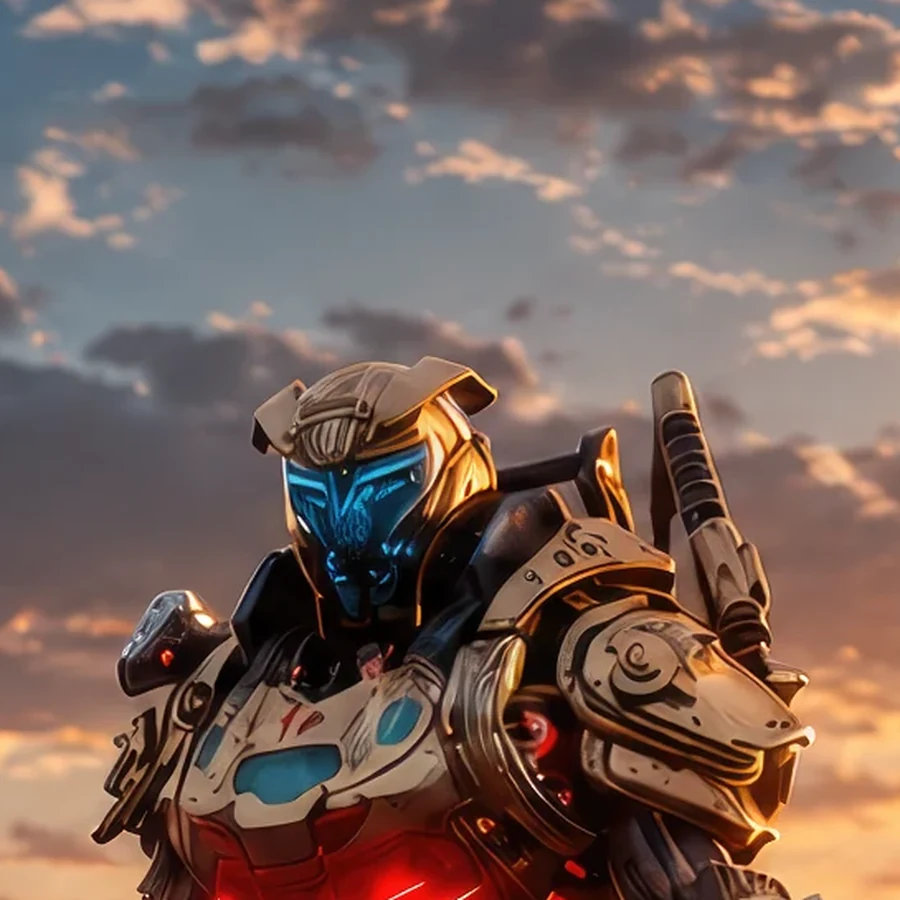

Field Observation
Wyphor investigates a green lattice pyramid glowing on the lower-right shoreline. The pyramid marks an unexplained alien presence on Earth 1.
 ©
©
GENEZYS ARCHIVE · Legionnaire
Warp Runner
Identity & combat record
Archive node 01 / 04

Archive record
Wyphor runs patrols along the Threshold, the thin places where the portal could open. The Shift Spark flickers through the flanks with piercing force, and strikes twice as hard when only one enemy is left. The Eternal Custodian says every door has a keeper. Wyphor keeps the farthest ones.
Combat signature
Flickers through probability fields: Deals 60 pierce damage to enemies on the edges. If there's only 1 enemy left, damage is doubled.
Genezys 07:01 ™&©2026LEGIONS
Field intelligence
Archive node 02 / 04
FIELD REPORT // OBJECT DISCOVERY
Field Observation
Wyphor investigates a green lattice pyramid glowing on the lower-right shoreline. The pyramid marks an unexplained alien presence on Earth 1.
Environment
Object Analysis
Key Findings
Restricted visual records
Archive node 03 / 04

Motion archive
Archive node 04 / 04
Motion record not yet recovered